In this article, we will see how to use CSS with HTML forms to style some form widgets that are difficult to customize. As we saw in the previous article, text fields and buttons are perfectly okay with CSS. Now we will dig into the dark part of HTML form styling.
Before going further, let's recall two kinds of HTML form widgets:
- The bad
- Elements that can hardly be styled and require some complicated tricks, sometimes involving advanced CSS3 knowledge.
- The ugly
- Just forget CSS to style these elements. At best you'll be able to do a few things but it will not be reliable across browsers, and it will never be possible to take full control over their appearance.
CSS expressiveness
The main problem with form widgets other than text fields and buttons is that in many cases, CSS is not expressive enough to properly style complex widgets.
The recent evolution of HTML and CSS have extended CSS expressiveness:
- CSS 2.1 was very limited and gave us only three pseudo-classes:
- CSS Selector Level 3 added a few new pseudo-classes related to HTML forms:
- CSS Basic UI Level 3 also adds a few pseudo-classes to describe the state of a widget:
- CSS Selector Level 4 which is currently under active development and heavy discussion doesn't plan to add much more to improve forms:
:user-errorwhich is just an improvement of the:invalidpseudo-class.
All of this is a good start but there are two issues with this: first, some browsers do not necessarily implement features beyond CSS 2.1. Second, these are simply not good enough for styling complex widgets such as date pickers.
There are some experiments by browser vendors to extend CSS expressiveness about forms and in some cases it's good to know what's available.
Warning: Even thought these experiments are interesting, they're not standard, which means it's not reliable. If you use them (and you probably often shouldn't), you do so at your own risk and you're doing something that may be bad for the Web by using non-standard properties.
- Mozilla CSS Extensions
- WebKit CSS Extensions
- Microsoft CSS Extensions
- Opera has no extensions related to HTML forms
Controlling the appearance of form elements
WebKit- (Chrome, Safari) and Gecko- (Firefox) based browsers offer the highest degree of customization for HTML widgets. The are also available cross-platform so they need a mechanism to switch from widgets with native look and feel to widgets that are stylable by the user.
To that end, they use a proprietary property: -webkit-appearance or -moz-appearance. Those properties are not standard and should not be used. In fact, they even behave differently between WebKit and Gecko. However, there is one value that is good to know: none. With this value, you are able to gain (almost full) control over the style of a given widgets.
So, if you have trouble applying a style to an element, try using those proprietary properties. We'll see some examples below, but the best known use case for this property is for styling search fields on WebKit browsers:
<form>
<input type="search">
</form>
<style>
input[type=search] {
border: 1px dotted #999;
border-radius: 0;
-webkit-appearance: none;
}
</style>
Note: It's always hard to predict the future when we talk about Web technologies, but extending CSS expressiveness is difficult and there is some exploratory work with other specifications such as Shadow DOM that offer some perspective. The quest for the fully stylable form is far from over.
Examples
Check boxes and radio buttons
Styling a check box or a radio button by itself is kind of messy. For example, the sizes of check boxes and radio buttons are not really meant to be changed, and browsers can react very differently if you try to do it.
A simple test case
Let's consider the following test case:
<span><input type="checkbox"></span>
span {
display: inline-block;
background: red;
}
input[type=checkbox] {
width : 100px;
height: 100px;
}
Here is the way different browsers handle this:
| Browser | Rendering |
|---|---|
| Firefox 16 (Mac OSX) | |
| Chrome 22 (Mac OSX) | 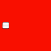 |
| Opera 12.01 (Mac OSX) | |
| Internet Explorer 9 (Windows 7) | |
| Internet Explorer 7 (Windows XP) |
A more complex example
Because Opera and Internet Explorer do not have features such as -webkit-appearance or -moz-appearance, using them is not suitable. Fortunately, we are in a case where CSS is expressive enough to find solutions. Let's take a common example:
<form>
<fieldset>
<p>
<input type="checkbox" id="first" name="fruit-1" value="cherry">
<label for="first">I like cherry</label>
</p>
<p>
<input type="checkbox" id="second" name="fruit-2" value="banana" disabled>
<label for="second">I can't like banana</label>
</p>
<p>
<input type="checkbox" id="third" name="fruit-3" value="strawberry">
<label for="third">I like strawberry</label>
</p>
</fieldset>
</form>
with some basic styling:
body {
font: 1em sans-serif;
}
form {
display: inline-block;
padding: 0;
margin : 0;
}
fieldset {
border : 1px solid #CCC;
border-radius: 5px;
margin : 0;
padding: 1em;
}
label {
cursor : pointer;
}
p {
margin : 0;
}
p+p {
margin : .5em 0 0;
}
Now, let's style this to have a custom check box.
The plan is to replace the native checkbox with an image of our own. First, we need to prepare an image with all the states required by a check box. Those states are: unchecked, checked, disabled unchecked, and disabled checked. This image will be used as a CSS sprite:
Let's start by hiding the original check boxes. We will simply move them outside the page viewport. There are two important things to consider here:
- Do not use
display:noneto hide the check box because as we'll see below, we need the check box to be available to the user. Withdisplay:none, the check box is no longer accessible to the user which means that it's impossible to check or uncheck it. - We will use some CSS3 selectors to perform our styling. In order to support legacy browsers, we can prefix all our selectors with the
:rootpseudo-class. In the current state of implementation, all browsers that support what we need also support the:rootpseudo-class, while others don't. This is an example of a convenient way to filter legacy Internet Explorer. Those browsers will see the regular check box while modern browsers will see the custom check box.
:root input[type=checkbox] {
/* original check box are push outside the viexport */
position: absolute;
left: -1000em;
}
Now that we've gotten rid of the native check box, let's add our own. To that end, we will use the :before pseudo element of the <label> element that follows the original check box. So in the following selector, we use the attribute selector to target the check box; then we use the adjacent sibling selector to target the label following the original check box. Finally, we access the :before pseudo-element and style it to have it display our custom unchecked check box.
:root input[type=checkbox] + label:before {
content: "";
display: inline-block;
width : 16px;
height : 16px;
margin : 0 .5em 0 0;
background: url("https://developer.mozilla.org/files/4173/checkbox-sprite.png") no-repeat 0 0;
/* The following is used to adjust the position of
the check boxes on the text baseline */
vertical-align: bottom;
position: relative;
bottom: 2px;
}
We use the :checked and :disabled pseudo-classes on the original check box to change the state of our custom check box accordingly. Because we're using a CSS sprite, all we need to do is change the position of the background.
:root input[type=checkbox]:checked + label:before {
background-position: 0 -16px;
}
:root input[type=checkbox]:disabled + label:before {
background-position: 0 -32px;
}
:root input[type=checkbox]:checked:disabled + label:before {
background-position: 0 -48px;
}
The last (but very important) thing: when a user uses the keyboard to navigate from one form widget to another, each widget should be focused visually. Because we hide the native check boxes, we have to implement this feature ourselves to let the user know where they are in the form. The following CSS implements the focusing of our custom checkboxes.
:root input[type=checkbox]:focus + label:before {
outline: 1px dotted black;
}
You can see the live result:
Dealing with the select nightmare
The <select> element is considered an "ugly" widget because it's impossible to style it consistently cross platform. However, some things are possible. Rather than a long explanation, let's take an example:
<select> <option>Cherry</option> <option>Banana</option> <option>Strawberry</option> </select>
select {
width : 80px;
padding : 10px;
}
option {
padding : 5px;
color : red;
}
The following table shows how different browsers handle this in two cases. The first two columns are just the example alone. The second two columns use some custom CSS to gain more control on the widget's appearance, as shown below:
select, option {
-webkit-appearance : none; /* To gain control over the appearance on WebKit */
-moz-appearance : none; /* To gain control over the appearance on Gecko */
/* To gain control over the appearance on Presto (Opera) and Trident (IE)
Note that it also work on Gecko and has partial effects on WebKit */
background : none;
}
| Browser | Regular rendering | Tweaked rendering | ||
|---|---|---|---|---|
| closed | open | closed | open | |
| Firefox 16 (Mac OSX) | 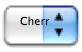 | 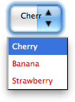 | 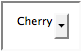 | 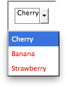 |
| Firefox 16 (Windows 7) | 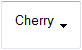 | 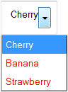 | 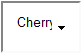 |  |
| Chrome 22 (Mac OSX) | 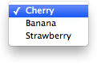 | 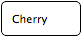 | 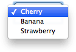 | |
| Chrome 22 (Windows 7) | 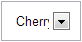 | 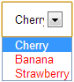 | 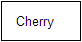 | 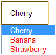 |
| Opera 12.01 (Mac OSX) | 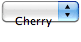 | 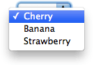 | 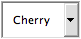 | 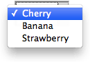 |
| Internet Explorer 9 (Windows 7) | 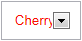 | 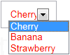 | N/A | N/A |
| Internet Explorer 7 (Windows XP) | 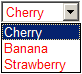 | N/A | N/A | |
As you can see, even with the help of the -*-appearance properties, there are still remaining issues:
- The
paddingproperty is handled inconsistently across operating systems and browsers. - Legacy Internet Explorer does not allow smooth styling.
- Firefox does not have a way to style the dropdown arrow.
- If you want to style the
<option>elements inside the dropdown list, the behavior of Chrome and Opera vary from one system to another.
Also, with our example, we are just talking about three CSS properties; imagine the mess when even more CSS properties are considered. As you can see, CSS is not suitable for changing the look and feel of these widgets consistently, but it still lets you tweak some things as long as you're willing to live with differences from one browser and one operating system to another.
We will try to figure which properties are suitable in the next article: Properties compatibility table for form widgets.
The road to nicer forms: useful libraries and polyfills
Although CSS is expressive enough for check boxes and radio button, it is far from true for more advanced widgets. Even though a few things are possible with the <select> element, the file widget cannot be styled at all; the same goes for the date picker, etc.
If you want to gain full control over form widgets, you have no choice but to rely on JavaScript. In the article How to build custom form widgets we will see how to do it on our own, but there are some very useful libraries out there that can help you:
- Uni-form is a framework that standardizes form markup and styles it with CSS. It also offers a few additional features when used in concert with jQuery, but that's optional.
- Formalize is an extension to common JavaScript frameworks (such as jQuery, Dojo, YUI, etc.) that helps to normalize and customize your forms.
- Niceforms is a standalone JavaScript method that provides complete customization of web forms. You can use some of the built in themes or create your own.
The following libraries aren't just about forms, but they have very interesting features for dealing with HTML forms:
- jQuery UI offers some very interesting advanced and customizable widgets, such as date pickers (with special attention given to accessibility).
- Twitter Bootstrap can be really helpful if you want to normalize your forms.
- WebShim is a huge tool that can help you deal with browser HTML5 support. The web forms part can be really helpful.
Remember that binding CSS and JavaScript can have side effects. So if you choose to use one of those libraries, you should always have fallback style sheets in case the script fails. There are many reasons why scripts may fail, especially in the mobile world, and you need to design your Web site or app to handle these cases as best as possible.
Conclusion
While there are still dark spots when using CSS with HTML forms, there are often ways to get around them. There are no clean, universal solutions but modern browsers offer new possibilities. For now, the best solution is to learn more about the way the different browsers support CSS as applied to HTML form widgets.
In the next article of this guide, we will explore how well the various HTML form widgets support the most important CSS properties: Properties compatibility table for form widgets.